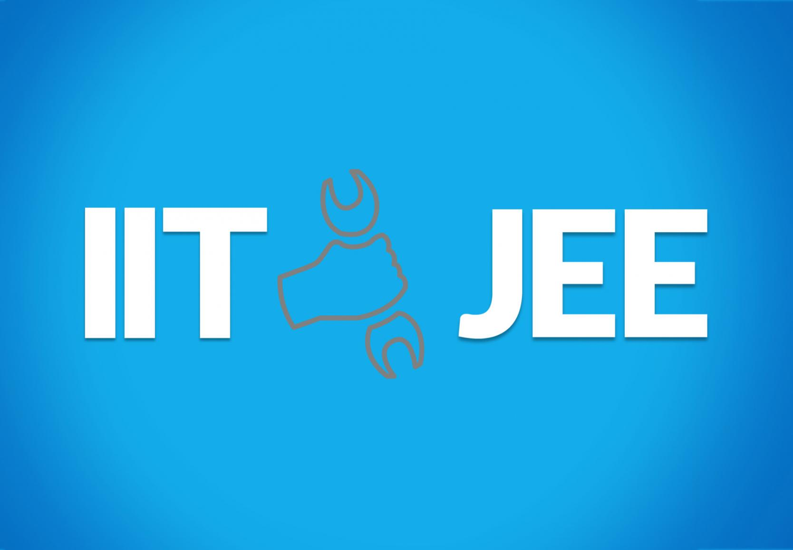
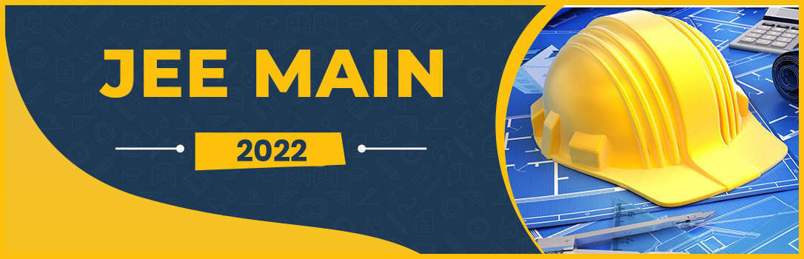
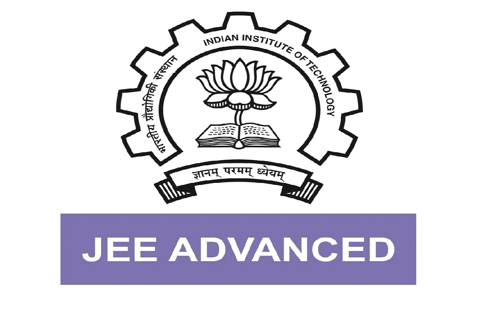

The Joint Entrance Examination (JEE) is an engineering entrance assessment conducted for admission to various engineering colleges in India. It is constituted by two different examinations: the JEE-Main and the JEE-Advanced. The Joint Seat Allocation Authority (JoSAA) conducts the joint admission process for a total of 23 Indian Institute of Technology campuses, 31 National Institute of Technology campuses, 25 Indian Institute of Information Technology campuses and 26 other Government Funded Technical Institutes (GFTIs) based on the rank obtained by a student in JEE-Main and JEE-Advanced.
JEE-Main is being conducted by National Testing Agency (NTA). JEE-Main has two papers, Paper-I and Paper-II. Candidates may opt for either or both of them. Both papers contain multiple choice questions. Paper-I is for admission to B.E./B.Tech courses and is conducted in a Computer Based Test mode. Paper-II is for admission in B.Arch and B.Planning courses and will also be conducted in Computer Based Test mode except for one paper, namely the 'Drawing Test' which shall be conducted in Pen and Paper mode or offline mode. From January 2020 an additional Paper-III is being introduced for B.Planning courses separately
JEE-Advanced exam is conducted for entry into 23 IIT's and some other prestigious universities like IISC Bangalore, IIST Thiruvananthapuram, Indian Institute of Petroleum and Energy (IIPE), Indian Institute of Science Education and Research (IISERs), Rajiv Gandhi Institute of Petroleum Technology (RGIPT). This exam is conducted by any one of the IIT's every year. In 2020 the exam was conducted by IIT Delhi. In 2021, 2022, 2023 it shall be conducted by IIT Kharagpur, IIT Bombay and IIT Guwahati respectively. More than 2 lakh students become eligible to write JEE-Advanced every year. The students who qualify the JEE-Main exam become eligible for the JEE-Advanced examination. In 2018, 224,000 students were allowed to take the JEE-Advanced,[10] a number that had gone up from 220,000 in 2017 and 200,000 in 2016.
